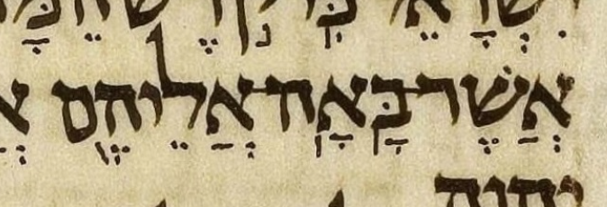
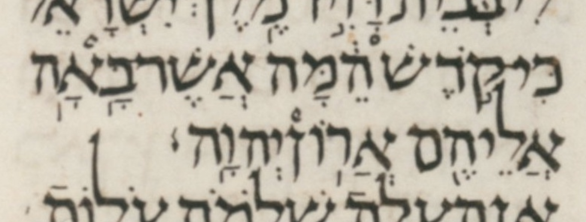

Alternately, you can click on an individual Hebrew word to toggle only that word's spacing.
← Back to Meteg after the stress.
At 2 Chr. 8:11, in the Leningrad codex, the word after a MAS lacks initial stress, at least according to one interpretation of the ambiguous meteg/silluq marks in the manuscript.
| MAM | MBS | אֲשֶׁר־בָּ֥אָֽה־אֲלֵיהֶ֖ם |
| L-1 | MAS | אֲשֶׁר־בָּ֥אָֽה |
| L-2 | MBS | אֲשֶׁר־בָּֽאָ֥ה |
The following table gives each Leningrad interpretation's MBS/MAS classification and lists the printed editions that have that Leningrad interpretation.
| L-1 | MAS | Breuer (Da-at Miqra), Dotan (BHL) |
| L-2 | MBS | BHS |

